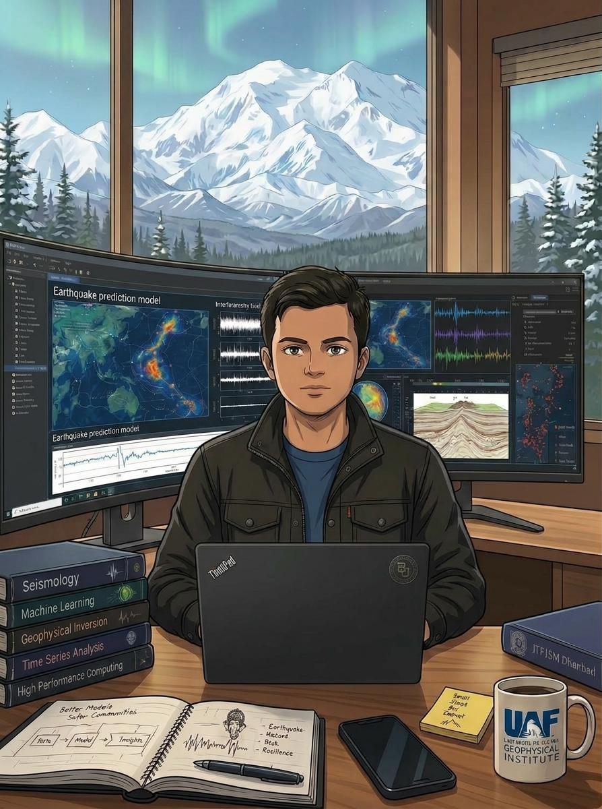

Yashwant Soni
Seismologist (PhD). I listen to the Earth's background hum and turn it into images of what lies beneath, using machine learning to read signals faster and more carefully than any one person could.
- Interferometry
- Imaging
- Artificial
- Intelligence


Live synthetic seismogram, vertical component
Tick marks every second
What I work on
Seismic interferometry
Cross-correlating ambient noise between pairs of seismometers recovers how waves travel between them, with no earthquake required.
Imaging and tomography
Thousands of those travel times are inverted into 3-D velocity models of the crust and upper mantle, revealing faults, basins and slabs.
Machine learning
Neural networks pick seismic phases, denoise records and classify events across years of continuous data.